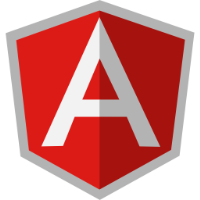

Bootstrap
BOOTSTRAP (также известен как Twitter Bootstrap ) — свободный набор инструментов для создания сайтов и веб-приложений. Включает в себя HTML- и CSS-шаблоны оформления для типографики, веб-форм, кнопок, меток, блоков навигации и прочих компонентов веб-интерфейса, включая JavaScript-расширения. Читать далее
AngularJS

AngularJS — JavaScript-фреймворк с открытым исходным кодом. Предназначен для разработки одностраничных приложений. Его цель — расширение браузерных приложений на основе MVC-шаблона, а также упрощение тестирования и разработки. Читать далее